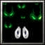
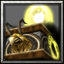

原名叫真田八郎，號大盜五右衛門，因是河內國石川郡 山內古氏的家臣，所以改稱石川五右衛門。他白天打扮成商人模樣，到處探聽富戶人家，夜裡進行搶劫。 穿梭於亂世的謎之怪盜 石川五右衛門。關於他的身世，說出來令人吃驚：五右衛門的父親，原本是中國明朝皇帝神宗的臣下宗蘇卿，而派到日本辦事卻行蹤不明，五右衛門為了尋找父親前 往日本，成為明智光秀的養子。其後經本能寺之變、光秀三日天下、秀吉職得日本，五右衛門淪為盜賊。至於他的武技，主要也是以輕功為主，真田十勇士的霧隱才 藏與五右衛門是同門師兄弟。在逃亡開始時，五右衛門偶然得知，殺死他父親的，與殺死他養父光秀的同是秀吉。所以，心中抱著"毀滅豐臣的天下"而組織起強大 盜賊團擾亂世界的寧靜。 力量型近戰英雄
法術 ：Ｃ 輔助 ：Ｄ 最擅長一對一，賺錢 敏捷：24+2.10 智 慧：15+1.80 
Ｄ[主 動] 盜賊藏匿術阻止部隊自動追尋敵人，讓它在夜間影化並保持不 為人所見。 Ｗ[主動] 狂氣
犧牲[36/32/28/24]%移動速度，增加[120/240/360/480]%攻擊速度。 持續8秒。 消耗法力[80/100/120/140]，等待時間10秒 會被魔免解除效果 
Ｅ[主動] 殺人越貨 立刻殺死一個非英雄部隊，並額外獲得指定部隊原本死亡掉落的黃金一倍。 生物等級上限[3/3/3/4]。 消耗法力150 等待時間[60/50/40/30]秒 Ｒ[被動] 野蠻之力 Ｔ[主動] 搶劫
對著敵方猛烈一擊，造成[900/1300/1800]魔法傷害並昏迷[3/3.5/4]秒，此時趁敵方昏迷 期間竊走敵方800點黃金。 消耗法力[500/600/700]，等 待時間[270/230/180]秒 |